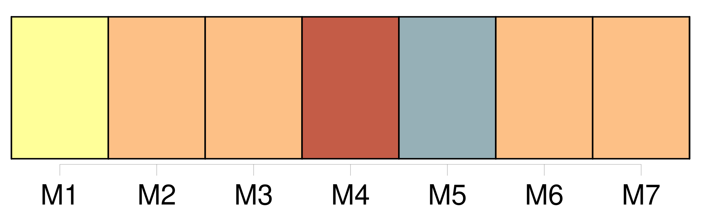
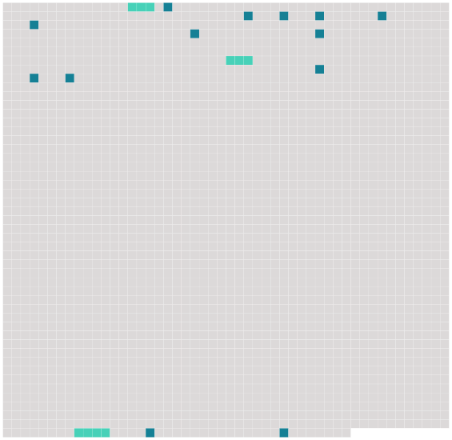

Longueur nb maillons : 16 mentions |
  |
»
[Elle] n'était qu'un peu souffrante de ces malaises féminins qu'ont souvent les jolies femmes : un peu d'anémie, des nerfs, et un soupçon de fatigue, de cette fatigue qu'éprouvent parfois les nouveaux époux à la fin du premier mois d'union, quand ils ont fait un mariage d'amour. [Elle] était étendue sur [sa] chaise longue et [causait] « Non, docteur, [je] ne comprendrai jamais qu'une femme trompe son mari. [J'] admets même qu'elle ne l'aime pas, qu'elle ne tienne aucun compte de ses promesses, de ses serments!! [5 phrases] Je [vous] assure qu'on ne réfléchit guère à toutes ces subtilités quand l'envie [vous] prend de faillir. [6 phrases]
» [2 phrases] « Après coup, dites [-vous] !! [2 phrases]
.. [Tenez] , je vais [vous] raconter une petite histoire arrivée à une de mes clientes à qui j'aurais donné le bon Dieu sans confession, comme on dit. [100 phrases]
[La jeune femme crispée] demanda :
» |
 |
La ressource peut être téléchargée sur la page Ortolang
Si vous avez des questions ou vous voyez des erreurs, merci d'envoyer un mail à silvia.federzoni89@gmail.com
Site développé par S. Federzoni (contact)